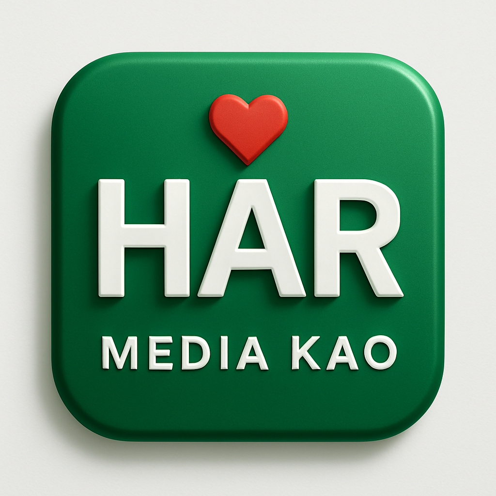

🌿 Atasi Toksin dalam Tubuh dengan Koyo Kinoki!
Solusi alami untuk kesehatan — detoks tubuh sambil tidur, bangun lebih segar!
Kenapa Pilih Koyo Kinoki?
Membantu detoksifikasi tubuh
Mengurangi pegal dan nyeri
Praktis dipakai saat tidur
Terbuat dari bahan herbal alami
Formulir Pemesanan
🟢 Chat Sekarang di WhatsApp